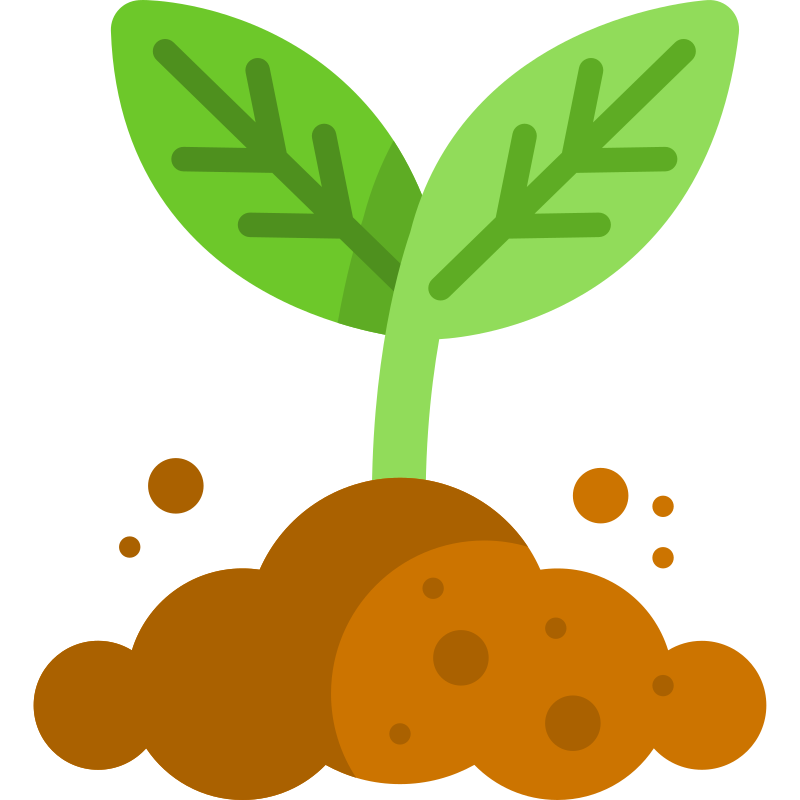
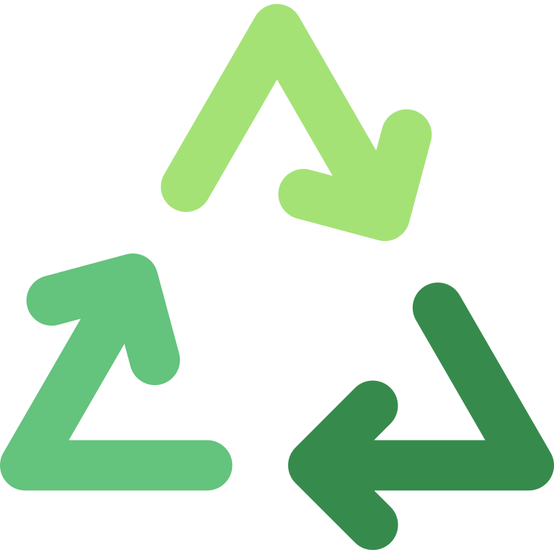
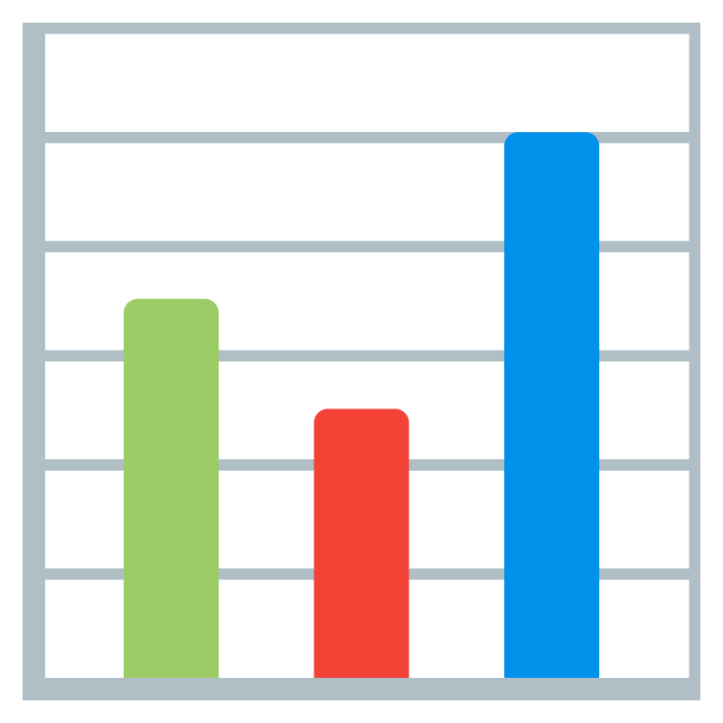
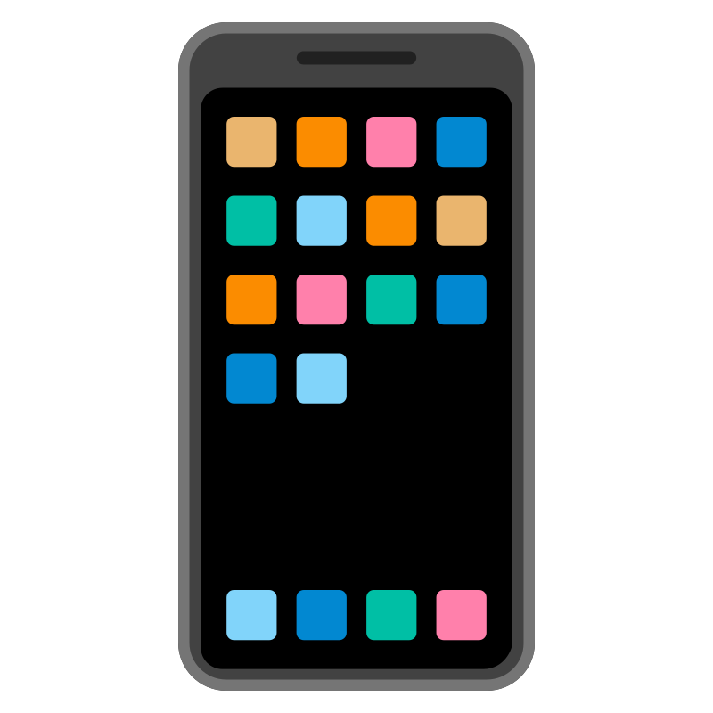
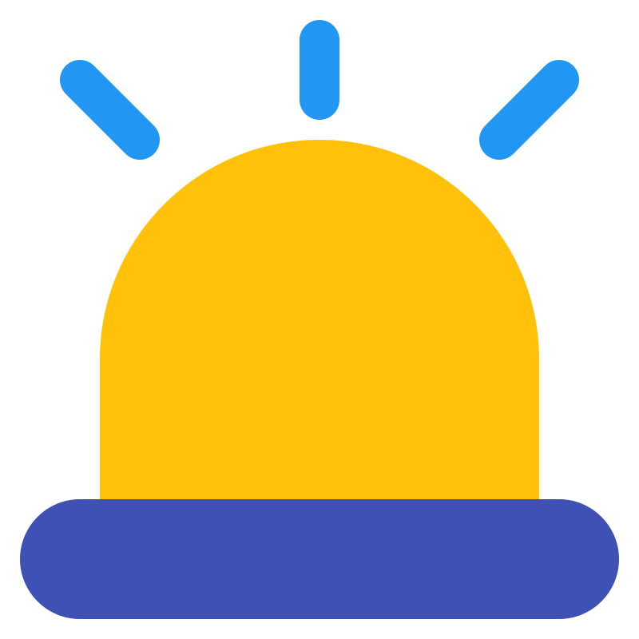

¿Qué es Chinampa?
Chinampa conecta investigadores, productores y agricultores mediante tecnología de vanguardia. Su arquitectura modular y escalable permite gestionar datos agrícolas en tiempo real y tomar decisiones estratégicas basadas en evidencia.
Impacto ambiental y agrícola
-

Reducción de fertilizantes químicos mediante biofertilizantes - Ahorro de agua con riego inteligente basado en sensores IoT
- 🌾 Semillas resistentes adaptadas al cambio climático
-
 Conservación de la biodiversidad microbiana y del suelo
Conservación de la biodiversidad microbiana y del suelo
-

Menor huella de carbono por optimización de recursos
Innovación tecnológica
Chinampa integra IoT para monitorear cultivos en tiempo real y automatizar procesos como el riego. Con Big Data y analítica agrícola, genera reportes que permiten:
-

Comparar rendimiento de semillas en distintos climas -
 Predecir riesgos y optimizar la producción
Predecir riesgos y optimizar la producción
-

Acceso multiplataforma desde computadoras y móviles -

Alertas inteligentes para actuar en el momento adecuado
Únete a Chinampa
Forma parte de la revolución agrícola sostenible con Chinampa. Ya seas investigador, productor o agricultor, nuestra plataforma te ofrece las herramientas para optimizar tu trabajo y contribuir a un futuro más verde.
Iniciar sesión
Accede a tu cuenta y comienza a gestionar tus cultivos.